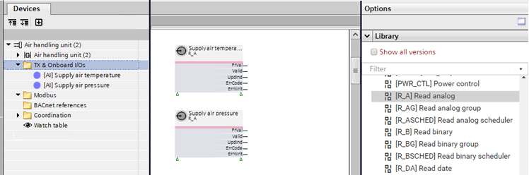

Accessing BACnet objects with function blocks
The BACnet objects of the field devices are listed in the Project tree. Function blocks with program function are the counterpart of the BACnet object in the chart. Function blocks and BACnet objects are separate, but they look like they are the same block.

The following function blocks are automatically created when you drag the corresponding BACnet object into a chart.
BACnet object | Description | Function block |
|---|---|---|
AI | Analog input | R_A |
BI | Binary input | R_B |
MI | Multistate input | R_M |
AO | Analog output | CMD_A |
BO | Binary output | CMD_B |
MO | Multistate output | CMD_M |
AConfVal | Analog configuration value | R_A |
ACalcVal | Analog calculated value | W_A |
APrcVal | Analog process value | CMD_A |
BConfVal | Binary configuration value | R_B |
BCalcVal | Binary calculated value | W_B |
BPrcVal | Binary process value | CMD_B |
MConfVal | Multistate configuration value | R_M |
MCalcVal | Multistate calculated value | W_M |
MPrcVal | Multistate process value | CMD_M |
Access a BACnet object
- Drag a field device, i.e. a BACnet input/output object, from the Project tree to the Programming editor.
- A function block with program function is created.
- The function block has the same name as the BACnet input/output object.
- The function block is assigned to the BACnet input/output object.